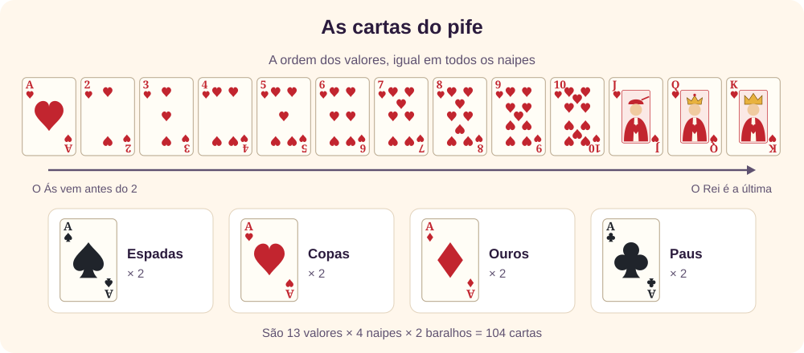
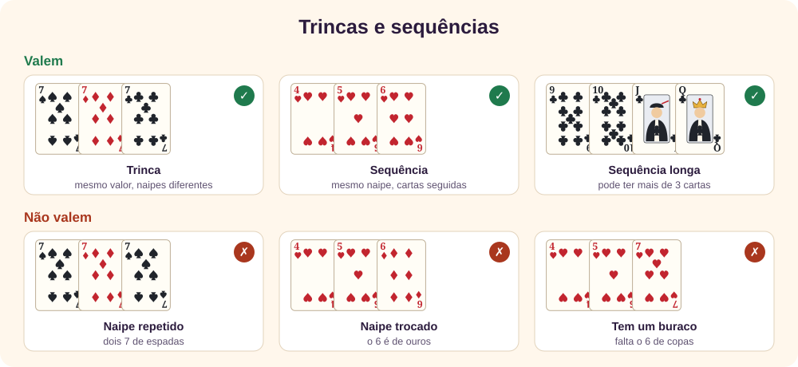
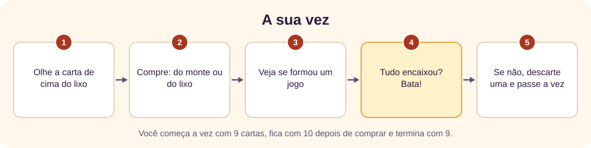
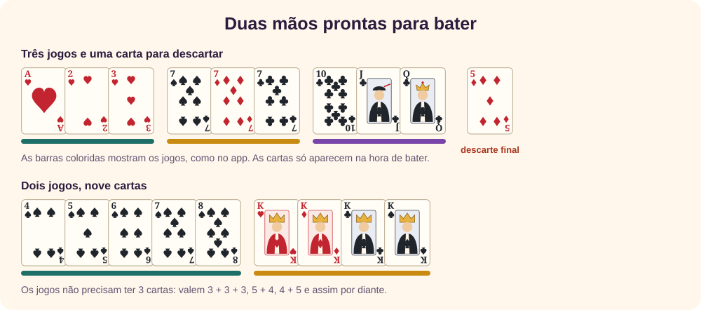

O jogo em um minuto
O pife, também chamado de pif-paf em muitos lugares, é um jogo de cartas simples de aprender: cada jogador tem 9 cartas na mão e tenta organizá-las em combinações. [1] Quem conseguir encaixar todas primeiro bate e ganha a rodada.
Não há pontos para somar nem lances para decorar. A cada vez você compra uma carta, fica com a que serve e joga fora a que não serve. A graça está em decidir o que guardar e em prestar atenção no que os outros descartam.
↑ Voltar ao topoAs cartas
O jogo usa dois baralhos comuns misturados, sem os curingas: 104 cartas no total. [4] Por isso cada carta existe em duas cópias, e pode acontecer de você ter dois 7 de ouros na mão.

Os valores seguem a ordem de sempre, com o Ás antes do 2. [3] As cartas não valem pontos: um Rei não pesa mais que um 2. Só importa se a carta entra em um jogo.
No começo da rodada, cada jogador recebe 9 cartas fechadas. O que sobra vira o monte, virado para baixo, e ao lado dele nasce o lixo, com as cartas descartadas viradas para cima.
↑ Voltar ao topoOs jogos que valem
Só existem dois tipos de jogo, e os dois precisam de pelo menos 3 cartas. [1]
- Trinca: cartas do mesmo valor e de naipes diferentes, como 7♠ 7♦ 7♣. Com quatro naipes, a trinca pode chegar a 4 cartas.
- Sequência: cartas seguidas do mesmo naipe, como 4♥ 5♥ 6♥. Pode ser tão longa quanto você conseguir.

O erro clássico do iniciante aparece por causa dos dois baralhos: 7♠ 7♦ 7♠ parece trinca, mas repete um naipe e não vale. Cada carta também só pode estar em um jogo por vez.
Seus jogos ficam na sua mão, em segredo, até o momento de bater. Ninguém baixa cartas na mesa durante a rodada. [1]
↑ Voltar ao topoSua vez, passo a passo
Quem começa é sorteado no app, e depois a vez segue em ordem, um jogador de cada vez. A sua vez tem sempre os mesmos passos:

- Olhe o lixo. A carta de cima é a única que você pode pegar. Ela é visível, então já dá para saber se serve.
- Compre uma carta. Ou a de cima do lixo, ou a de cima do monte, sem ver. Sempre exatamente uma.
- Reorganize. Veja se a carta nova fecha um jogo ou cria uma dupla promissora.
- Bata, se puder. Se todas as cartas encaixam, a rodada acaba e você ganha.
- Descarte uma. Se não bateu, ponha uma carta no lixo. Você volta a ter 9 e a vez passa.
Há uma exceção, só para quem abre a rodada. O lixo ainda está vazio, então o primeiro jogador compra do monte e, se não gostar da carta, pode descartá-la e comprar outra. [1]
↑ Voltar ao topoComo bater
Bater é mostrar a mão com todas as cartas em jogos válidos. Depois de comprar você tem 10 cartas, então existem dois casos: 9 cartas em jogos e 1 solta, que vira o descarte final, ou as 10 em jogos.

A forma mais comum são três jogos de três cartas, mas qualquer divisão serve, desde que nenhum jogo tenha menos de 3 cartas. No app, o botão Bater! só aparece quando a batida é válida, então você não corre o risco de bater errado.
↑ Voltar ao topoUma rodada comentada
Acompanhe uma mão real, conferida no motor do jogo. Observe como o jogador guarda as duplas boas e se livra das cartas sem par.
- Vez 1. O adversário descartou o 7♥, que fecha 5♥ 6♥ 7♥. Aqui vale pegar do lixo, porque a carta fecha um jogo. O K♠ não combina com nada e sai.
- Vez 2. O lixo não ajuda, então a compra é no monte. Vem o 9♠, e os noves viram trinca. O 2♦ sai.
- Vez 3. A Q♦ não combina com nada. Comprar e descartar a mesma carta é um lance normal.
- Vez 4. O 5♠ fecha 3♠ 4♠ 5♠. Agora são 9 cartas em jogos e o J♣ solto: é só bater, com o J♣ como descarte final.
Repare no 5: havia 5♥ e 5♠ na mão, e cada um ficou em uma sequência diferente. Isso é permitido, porque são duas cartas.
↑ Voltar ao topoA tela do app
O app faz a parte chata por você: mostra quantas cartas já estão em jogos, marca os jogos com barras coloridas e só deixa fazer o que é permitido.
Na hora de descartar, toque em uma carta e depois em Descartar, ou toque duas vezes na mesma carta. O botão Organizar agrupa os jogos prontos, e você pode arrastar as cartas para a ordem que preferir. Para treinar, comece com 2 jogadores no nível Fácil.
↑ Voltar ao topoDicas para começar bem
Testamos estilos de jogo em 6.000 partidas simuladas de 3 jogadores: um jogador com o estilo indicado contra dois no nível Difícil. Numa disputa equilibrada, cada um venceria 33% das vezes, com margem de erro de 1,2 ponto. [5]
| Estilo de jogo | Vitórias |
|---|---|
| Referência: o nível Difícil, sem restrição | 33,4% |
| Nunca pega do lixo, exceto para bater | 19,0% |
| Pega do lixo só se a carta aumenta os jogos | 32,1% |
| Pega do lixo sempre | 9,6% |
| Descarta sempre a carta solta mais alta | 17,1% |
| Descarta sempre a carta que comprou | 0,2% |
| Descarta ao acaso | 0,8% |
Os computadores não jogam como pessoas, então olhe para a direção desses números, não para o valor exato. Eles sustentam as dicas abaixo.
Olhe o lixo em toda vez
Ignorar o lixo derrubou as vitórias para 19,0%. Pegar só quando a carta aumenta seus jogos deu 32,1%, quase o mesmo que a referência. É uma regra simples e muito boa para começar.
Não pegue do lixo por impulso
Pegar sempre deu só 9,6%. Uma carta do lixo que não fecha nada toma o lugar de uma compra no monte, que pode trazer algo melhor. Além disso, todos veem o que você pegou.
Guarde as duplas com mais saídas
Uma dupla de mesmo valor ou de duas cartas seguidas tem 4 cartas que a completam. Com um buraco, ou com Ás e 2, são só 2. Na dúvida, desfaça primeiro as duplas mais fracas.
Descarte o que não combina, não o que é alto
Aqui as cartas não valem pontos. Quem descartou sempre a solta mais alta, sem olhar as chances, ficou em 17,1%. Um Rei com par vale mais do que um 3 sozinho.
Vigie os descartes
Se os dois 6♥ já saíram, a dupla 5♥ 7♥ não tem futuro. Contar o que já apareceu é o que separa o jogador iniciante do experiente.
Repare no que os outros pegam
Se o próximo jogador pegou um 8♣ do lixo, evite dar a ele outro 8 ou cartas vizinhas de paus. Quando não atrapalha a sua mão, descarte outra coisa.
Mantenha a mão flexível
Uma carta que serve a dois jogos possíveis, como um 5♥ ao lado de 5♠ e de 6♥, vale mais do que uma que só serve a um.
Quanto tempo você tem
Medimos 10.000 rodadas de cada tamanho, com todos no nível Difícil. Com mais jogadores a rodada acaba em menos vezes para cada um, porque alguém bate mais cedo.
| Jogadores | Vezes de cada um, em média | Compras feitas no lixo |
|---|---|---|
| 2 | 9 | 19% |
| 3 | 8 | 20% |
| 4 | 7 | 21% |
| 6 | 6 | 21% |
Também contamos 30.000 mãos iniciais: só 27% já vêm com algum jogo pronto, e 1% com dois. Começar sem nenhum é o normal, então não se preocupe. Valem as duplas, e o resto vem nas compras.
↑ Voltar ao topoErros comuns
- Trinca com naipe repetido. 7♠ 7♦ 7♠ não vale. Conte os naipes, não só os valores.
- Sequência com naipes misturados. 4♥ 5♥ 6♦ não vale, nem que as cores sejam iguais.
- Usar a mesma carta em dois jogos. Um 5♥ não entra ao mesmo tempo em uma trinca de cincos e em uma sequência de copas.
- Esquecer de descartar. Se não bateu, a vez termina com 9 cartas.
- Descartar a carta que o próximo quer. Se dá no mesmo para a sua mão, entregue a mais segura.
- Apegar-se a uma dupla morta. Se as cartas que a completam já saíram, desista dela.
Regras que mudam de mesa para mesa
O pife tem muitos nomes e muitas regras da casa. [1] Até as fontes discordam: algumas tiram os curingas do baralho, outras os usam, e uma delas faz as duas coisas no mesmo texto. [2] Antes de jogar com outras pessoas, combine estes pontos:
- Curinga amigo. Baralhos com curinga (a ficha da Wikipédia conta 108 cartas), que substitui qualquer carta que exista: A♠ 🃏 3♠ vale, mas uma quinta carta na trinca não. [1] O app tem esta opção.
- Curinga sorteado. Uma carta é virada, e o valor seguinte vira curinga na rodada. Com um Rei virado, o curinga é o Ás. [1] O app também tem.
- Q-K-A e K-A-2. Em algumas mesas o Ás também vem depois do Rei. [1] Outras descrições põem o Ás sempre embaixo. [3] No app é uma opção, desligada no início.
- Trinca de 4 cartas. Uma descrição de um jogo aparentado pede exatamente três naipes. [4] O app aceita 3 ou 4 cartas, como indica o exemplo da Wikipédia. [1]
- Bater errado. Em geral, quem bate errado recolhe as cartas e continua, mas só pode bater de novo comprando do monte. [1] Não existe no app, porque ele só deixa bater quando é válido.
- Cortar. Em algumas mesas dá para pegar o descarte fora da sua vez, desde que seja para bater na hora. [1] O app não tem esta variante.
- Pontuação e número de jogadores. A referência fala em 3 a 8 jogadores e não define pontos. [1] No app são de 2 a 6, e vence quem ganhar as rodadas combinadas.
Glossário
- Bater: mostrar a mão com tudo em jogos e ganhar a rodada.
- Curinga: carta que substitui outra, nas variantes que o usam.
- Descarte: a carta que você põe no lixo no fim da vez.
- Dupla: duas cartas que estão a uma carta de virar jogo.
- Jogo: uma trinca ou uma sequência.
- Lixo: a pilha de descartes, também chamada de bagaço. [1]
- Monte: as cartas fechadas de onde se compra.
- Sequência: 3 ou mais cartas seguidas do mesmo naipe.
- Trinca: 3 ou 4 cartas do mesmo valor, de naipes diferentes.
Revisão rápida
Em resumo
- Dois baralhos, 9 cartas na mão, jogos sempre em segredo.
- Compre uma, confira, bata se puder, senão descarte uma.
- Pegue do lixo quando a carta aumenta seus jogos. No resto, compre do monte.
- Descarte o que não combina, não o que é alto.
1. 9♠ 9♦ 9♠ é uma trinca?
Não. O naipe de espadas se repete. Uma trinca precisa de naipes diferentes.
2. J♣ Q♣ K♣ é uma sequência?
Sim: três cartas seguidas do mesmo naipe.
3. Você tem 10 cartas: três jogos de 3 cartas e uma solta. O que faz?
Bate, e a carta solta vira o descarte final.
4. O lixo mostra uma carta que não fecha nenhum jogo. O que costuma ser melhor?
Comprar do monte. Pegar sempre do lixo foi o pior dos estilos de compra nas simulações, com 9,6% de vitórias.
5. Qual dupla guardar: 5♥ 6♥ ou 5♥ 7♥?
5♥ 6♥. Ela tem 4 cartas que a completam (dois 4♥ e dois 7♥). A outra tem só 2 (os dois 6♥).
6. Quantas cartas você tem no fim da sua vez, se não bateu?
Nove, sempre.
Referências
- Wikipédia. Pife (jogo de cartas). É a base das regras deste tutorial.
- Auditório Ibirapuera. Como funciona o coringa no pife. O próprio texto se contradiz: diz que o coringa sai do baralho e depois explica como usá-lo.
- Auditório Ibirapuera. Qual a sequência do baralho no pife. Coloca o Ás como a carta mais baixa.
- Denexa Games. Regras do Pif Paf. Descreve um jogo muito parecido, com dois baralhos, 104 cartas, 9 cartas na mão e de 3 a 8 jogadores.
- Simulações próprias com o jogo Pife deste site, feitas entre jogadores do computador. Não medem pessoas.